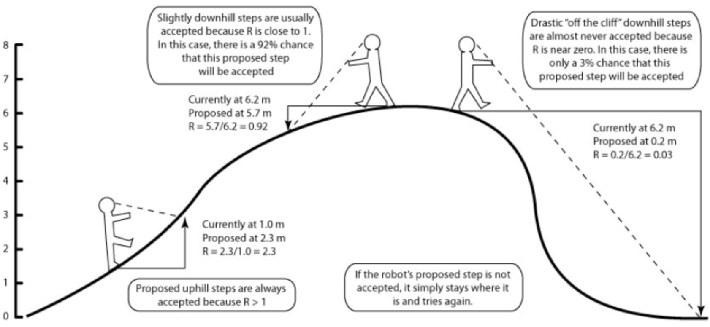
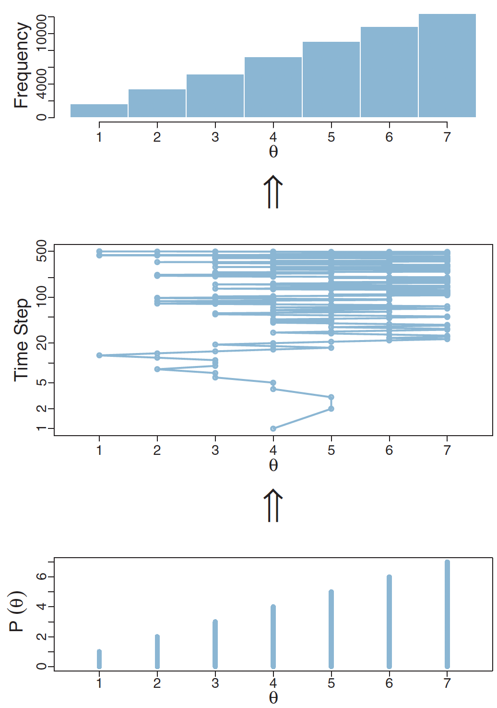
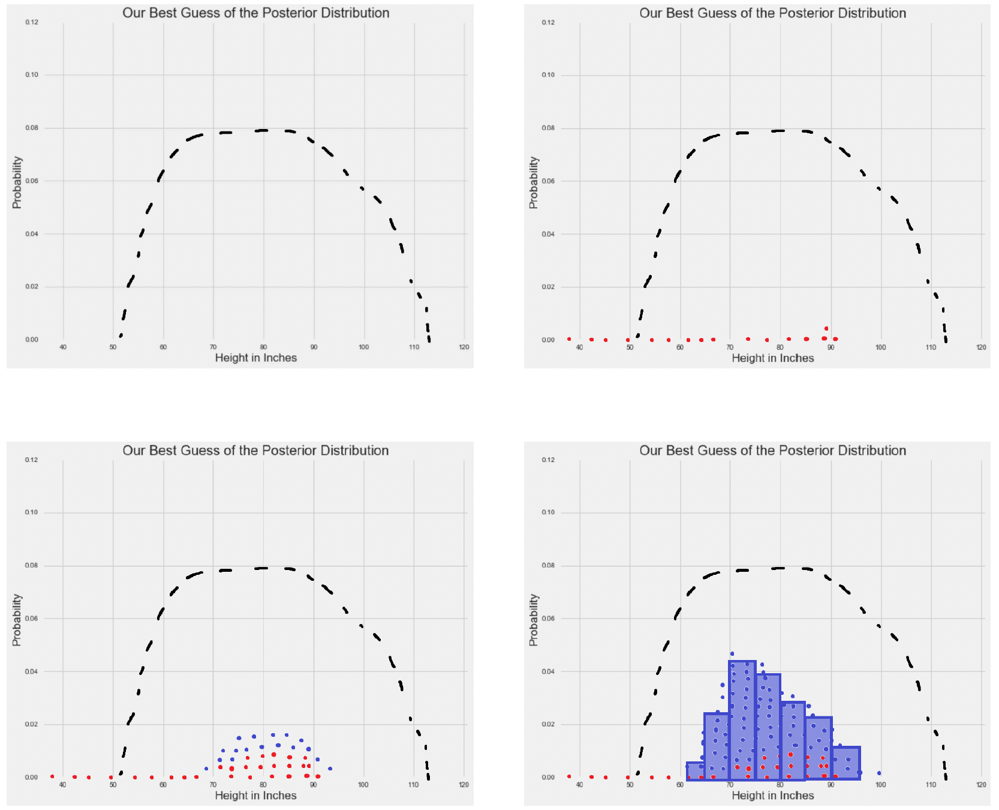

Markov chain Monte Carlo
Sampling from the posterior with brute force
In our previous chapter, we explored how to estimate the posterior distribution for a simple binomial model using grid approximation. This worked well mainly because we only had a single parameter, \(\theta\) to estimate at 20 points in the grid.
But what happens when our models become more complex and involve multiple parameters?
Let’s consider how the computational challenge scales with additional parameters. If we used 100 grid points for \(\theta\), we would need to compute 100 values. However, with two parameters \(\theta_1\) and \(\theta_2\), calculating the marginal likelihood becomes a double integral:
\[p(data) = \int\int p(data,\theta_1,\theta_2)d\theta_1d\theta_2\] This complexity grows dramatically when we move to models with many parameters. Consider a model with 100 means \((μ)\) and 100 standard deviations \((σ)\).
The marginal likelihood becomes:
\[ \scriptsize p(data) = \int_{\mu_1}\int_{\sigma_1}...\int_{\mu_{100}}\int_{\sigma_{100}} p(data|\mu_1,\sigma_1,...,\mu_{100},\sigma_{100}) \times p(\mu_1,\sigma_1,...,\mu_{100},\sigma_{100}) d\mu_1d\sigma_1...d\mu_{100}d\sigma_{100} \] If we use 100 grid points for each parameter in this model, the computational burden grows exponentially. Even with just two parameters, we need 100 × 100 = 10,000 computations, and with five parameters, this becomes 100⁵ = 10 billion computations!
Fortunately, there exists a solution: Markov chain Monte Carlo (MCMC).
Instead of trying to compute the entire posterior distribution, MCMC provides a way to draw samples; approximating it. MCMC takes advantage of the proportionality:
\[p(\theta|D) \propto p(D|\theta)p(\theta)\] This means we can generate samples from the posterior without having to compute the normalizing constant (the marginal likelihood) that makes the problem so computationally challenging.
Markov chains and Monte Carlo methods
Before we discuss an example of how MCMC works to sample from the posterior, let’s understand what it actually means.
Markov chains
A Markov chain is a sequence of random states where the probability of transitioning to the next state depends only on the current state, and not on the sequence of states that preceded it.
Mathematically, for a sequence of random variables \(X_1, X_2, ..., X_n\), the Markov property states:
\[P(X_{n+1} = x | X_n = x_n, X_{n-1} = x_{n-1}, ..., X_1 = x_1) = P(X_{n+1} = x | X_n = x_n)\] A classic example is weather prediction. If we simplify weather to just “Sunny” or “Rainy”, a Markov chain could represent the probability of tomorrow’s weather based only on today’s weather. For instance:
- If it’s sunny today, there’s a 70% chance it will be sunny tomorrow
- If it’s rainy today, there’s a 60% chance it will be rainy tomorrow
Monte Carlo methods
Monte Carlo methods use random sampling to obtain numerical results. Whilst sampling randomly may seem counter-productive, ultimately, the Law of Large Numbers1 ensures that these random samples provide good approximate solutions to numerical problems.
For an expected value \(E[f(X)]\), the Monte Carlo approximation is:
\[E[f(X)] \approx \frac{1}{n}\sum_{i=1}^n f(x_i)\]
where \(x_i\) are random samples from the distribution of \(X\).
There is an excellent YouTube video visually explaining how Monte Carlo methods work, by calculating an approximation of \(π\). It does this by randomly dropping marbles in a grid containing a circle and a square, where the circle’s area is determined by \(πa^2\) and the square’s by \(a^2\).
Markov chains were first introduced by Russian mathematician Andrey Markov in 1906, initially, to analyze the alternation of consonants and vowels in Russian literature, specifically Pushkin’s “Eugene Onegin”. Monte Carlo methods were developed during the Manhattan Project by scientists including Stanislaw Ulam (the namesake of the Stan programming language) and John von Neumann. The name “Monte Carlo” was coined by Nicholas Metropolis, inspired by Ulam’s uncle who would borrow money from relatives to gamble at the Monte Carlo Casino in Monaco.
A picture of the Monte Carlo Casino taken by A.S.
When we combine these concepts, we get Markov chain Monte Carlo (MCMC)! With respect to sampling from the posterior distribution:
- The Monte Carlo part means we’re going to use random sampling to explore the parameter space
- The Markov chain part provides a systematic way to guide these random samples toward regions of high posterior probability
In general, here are the steps behind MCMC:
- Start at some initial state
- Propose a new state according to some transition rule
- Accept or reject the proposed state based on a criterion that ensures convergence to the desired distribution
- Repeat steps 2-3 many, many times
A practical example of MCMC using the Metropolis algorithm
Here’s an practical example demonstrating the idea behind MCMC, using a specific instance, the Metropolis algorithm.
MCMC refers to a specific method of sampling, of which the Metropolis algorithm is just one example. We will discuss more examples of MCMC including Hamiltonian Monte Carlo (HMC), the specific type used by Stan.
Charles is a billionaire who made his fortune in the energy industry. Unfortunately, Charles has 10 ex-wives and wants to divide his time visiting them proportionally to how much he likes them (his posterior distribution). As it happens, his 10 ex-wives live in a line along a street, numbered 1-10 in order. His preferences are:
| House | 1 | 2 | 3 | 4 | 5 | 6 | 7 | 8 | 9 | 10 |
|---|---|---|---|---|---|---|---|---|---|---|
| Preference (%) | 20 | 15 | 15 | 12 | 10 | 10 | 8 | 5 | 3 | 2 |
But there are complications:
- Charles only knows relative preferences - he can say if he likes one ex more than another, but can’t assign exact numbers
- He can only visit nearby ex-wives (can’t teleport between distant houses)
- He wants his total visiting pattern to reflect his true preferences
Here’s how MCMC would work for Charles:
- Start at any ex-wife’s house (let’s say #5)
- Propose a move (Monte Carlo part). Charles can only propose visiting a nearby ex, so he randomly picks one of the neighboring houses.
- Decide whether to move (Markov chain part). If he likes the proposed ex more than current ex: Definitely move. If he likes them less:
\[\small{\text{Move with probability}} = \frac{\text{new preference}}{\text{current preference}}\]
This “random walk” along the street, with tendency to move toward and stay longer at more preferred houses, will eventually result in Charles spending time proportional to his preferences.
There are many different types of MCMC; we used the Metropolis algorithm as it demonstrates the principles of MCMC quite simply. The Metropolis algorithm is a special case of the Metropolis-Hastings algorithm which allows for non-symmetric proposal distributions. The acceptance ratio includes an additional term to account for this asymmetry.
Here is a visualization of the different steps of the Metropolis algorithm using an “MCMC robot”2.

The MCMC robot hard at work
And here is a diagram showing how the Metropolis algorithm can approximate the posterior distribution of discrete data3.

The Metropolis algorithm accurately estimates the posterior distribution of discrete data
In this plot, imagine you’re trying to estimate the probability of different values of \(\theta\), but you can only use whole numbers from 1 to 7. The bottom plot shows what we’re aiming for - it’s the true probability distribution we want to sample from, where higher values of \(\theta\) are more likely.
The middle plot shows how the algorithm actually explores these values over time. It’s akin to taking a walk, where at each step you can move to a different value of \(\theta\). Sometimes the algorithm stays in place (shown by horizontal lines), which happens when a proposed move is rejected. Other times it jumps to a new value. Notice how it tends to spend more time around the larger values of \(\theta\) (5, 6, and 7) because these have higher probabilities in our target distribution.
The top plot shows the results of this exploration - it’s a histogram counting how often the algorithm visited each value of \(\theta\). These frequencies end up matching our target distribution from the bottom plot. Even though we’re just taking a random walk through the possible values, guided by some simple rules about when to accept or reject moves, we end up with samples that accurately represent the probability distribution we’re interested in.
The plots below demonstrates how the Metropolis algorithm works for continuous data, in this case to provide an approximation for human height in a sample of participants4:

The Metropolis algorithm approximates the shape of the posterior distribution for continuous data
The first plot shows just the target posterior distribution (the dashed black line).
In the second plot, we see the first few MCMC samples appearing as red dots. These are our initial explorations of the parameter space, but they’re too sparse to give us a good picture of the distribution yet.
The third plot shows more samples accumulating (blue dots added to the red ones). We’re starting to see a pattern emerge - the samples are clustering more densely in areas where the true posterior has higher probability.
Finally, in the fourth plot, after many more samples, we create a histogram (blue bars) from all our samples. Notice how the shape of this histogram closely matches the shape of the original dashed curve. In other words, our MCMC sampling has successfully approximated the true posterior distribution.
Multiple chains, convergence and Hamiltonian Monte Carlo
An analogy of MCMC would be trying to find the highest mountain in a huge mountain range in complete darkness. However. instead of sending just one explorer who might get stuck in the wrong place or miss the highest peak entirely, we send multiple explorers starting from different random locations. Each explorer’s path is what we call a “chain” in MCMC.
If all our explorers eventually find their way to the same region and report similar findings about the landscape, we can be more confident they’ve found what we’re looking for. This is why we run multiple MCMC chains - if they all converge to sampling from the same distribution, it suggests we’re getting reliable results.
However, traditional MCMC methods like Metropolis, Metropolis-Hastings and Gibb’s sampling aren’t very efficient in this manner. This is where a more sophisticated method called Hamiltonian Monte Carlo (HMC) comes in. Instead of random wandering, HMC’s exploration is guided by the properties of the terrain. By using information - specifically about the gradient (the slope) of our probability distribution - HMC can make much more efficient proposals about where to move next.
This is the MCMC method used by the Stan programming language, one of the most popular modern approaches for statistical modeling. Stan actually uses an even more advanced version called the No-U-Turn Sampler (NUTS).
Footnotes
Sedor, K. (2015). The law of large numbers and its applications. Lakehead University: Thunder Bay, ON, Canada.↩︎
Lewis, P. O. (2011). Bayesian Phylogenetics [Workshop presentation]. Workshop on Molecular Evolution, Český Krumlov, Czech Republic.↩︎
Kruschke, J. K. (2015). Doing Bayesian Data Analysis: A Tutorial with R, JAGS, and Stan, 2nd Ed. Academic Press.↩︎
- (n.d.). A zero-math introduction to Markov Chain Monte Carlo methods. Towards Data Science.